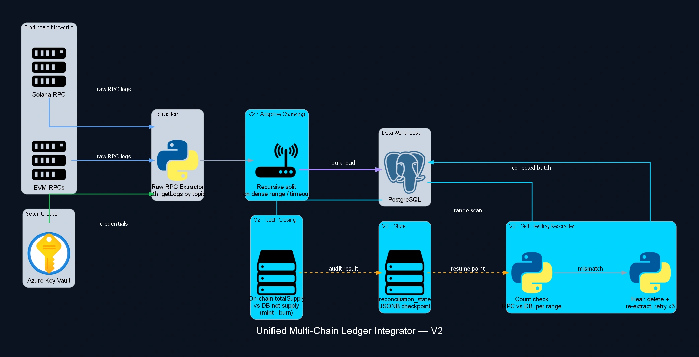

Unified Multi-Chain Ledger Integrator
Transactions across dozens of blockchains and contracts (EVM and Solana), consolidated by a resilient pipeline reading straight from the node via raw RPC (eth_getLogs filtered by event topic) instead of relying on a third-party indexer. Block ranges too dense for the API split recursively until they fit. The core differentiator is the self-healing reconciliation engine: it compares on-chain event counts against the database range by range, heals any mismatch on its own by deleting and re-extracting the batch, and closes with a final accounting check comparing total on-chain supply against the net supply computed in PostgreSQL: 100% integrity, no exceptions.

Case Study
Problem
A third-party indexer across 15+ networks scatters the data and gives no real integrity guarantee: each provider has its own lag, format and error rate, and there's no native way to know whether a block range landed incomplete in the database.
Solution
Direct extraction from the node via RPC, no middleman, with a block range that partitions itself when it's too dense for the API to answer. On top of that, a self-healing engine sweeps the history in batches, compares on-chain event counts against the database, and whenever it diverges deletes the whole batch and re-extracts it, with retry. At close, I compare the token's total supply straight from the contract against the net supply the database computes by summing mints and subtracting burns; that's the real accounting invariant, not just a row count.
Impact
Canonical relational unification of transactions and cross-chain balances between EVM and Solana, with reconciliation state persisted per network; a mid-run failure resumes from the last validated batch, never from zero.
Have a similar case? Let's design the architecture that proves the outcome in your context.
Discuss your case